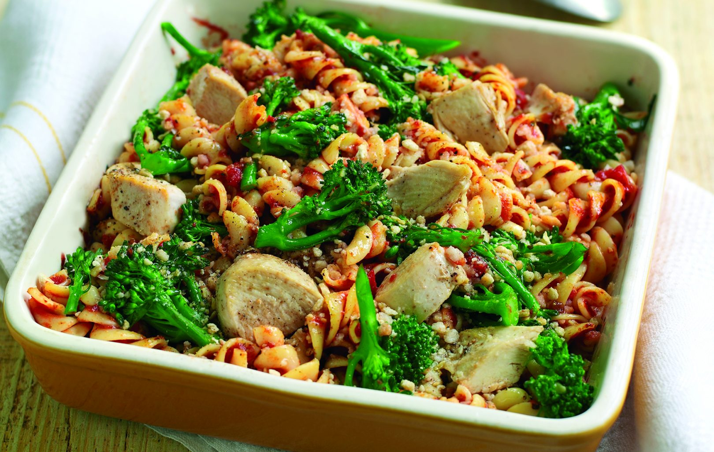

Slimming World’s turkey, broccoli and pasta
gratin recipe

Serves:
Prep:
Cooking:
Skill:
4
10 Min
30 Min
Easy
Our Slimming World's turkey, broccoli and pasta gratin recipe is so easy to make at home and is healthy too.
Turkey contains less fat than chicken and tastes delicious baked in this satisfying pasta gratin. Serve it up for dinner whether you’re watching what you eat or not. This classic Slimming World recipe full of flavour thanks to the tomato and garlic infused sauce.
Ingredients
-
170g/6oz dried pasta shapes, such as fusilli
- Salt and freshly ground black pepper, to taste
- 227g/8oz broccoli florets
- 2 sticks celery, thinly sliced
- 340g/12oz cooked skinless turkey breast, cut into bite-sized pieces
- 511ml/18fl oz passata with herbs
- 2 garlic cloves, peeled and crushed
- 28g/1oz fresh wholemeal breadcrumbs
- 1-2tsp dried Herbes de Provence, or dried mixed herbs
- 4 individual gratin dishes, or a single shallow 1.75 litre/3 pint flame-proof serving dish
Method
- Bring a large saucepan of water to the boil over a high heat, add the pasta and a pinch of salt and cook according to the packet instructions. Drain well and set aside.
- Meanwhile bring another medium saucepan of water to the boil, add the broccoli, celery and a pinch of salt and boil for 5 mins, or until the broccoli is just beginning to soften. Drain well, rinse under cold running water, drain again and set aside.
- Preheat the grill to medium-high.
- Place the turkey in a clean saucepan on a medium hea tand stir in the passata along with the garlic, broccoli, celery and pasta, then simmer for 5 mins. Season to taste.
- Pour the turkey mixture into 4 individual gratin dishes, or a single shallow 1.75 litre/3 pint flame-proof serving dish. Scatter the breadcrumbs and herbs evenly over the top, then grill until the sauce is bubbling and the crumbs are crisp and golden. Serve hot.
Top tip for making Slimming World’s turkey, broccoli and pasta gratin
On the Slimming World diet? We have lots of tasty Slimming World recipes